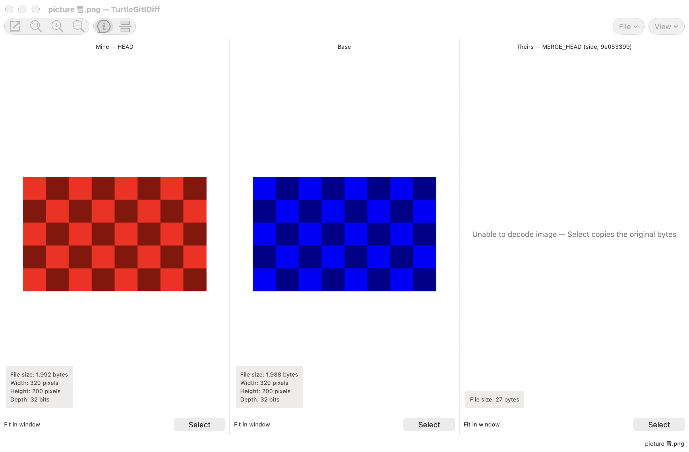
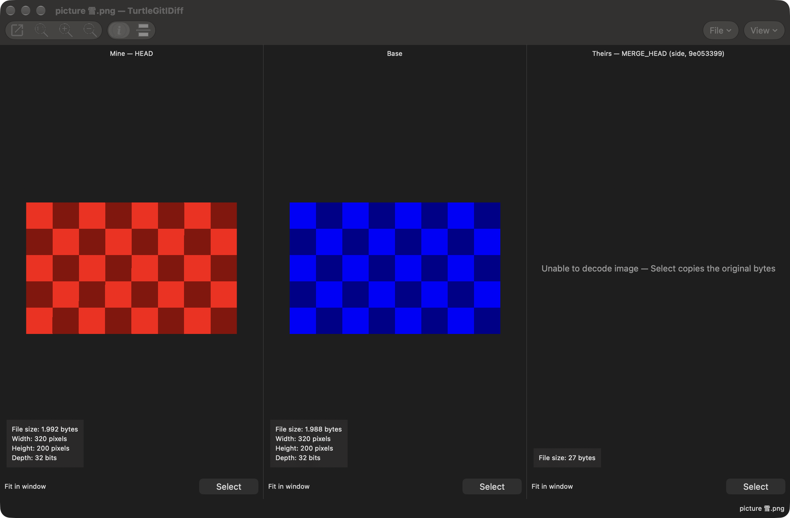

TurtleGit dialog guide
These instructions describe the implemented macOS workflows. The complete TortoiseGit port and signed Finder/App Store acceptance remain in progress. Start with Getting started and repository folder access when opening a repository.
Clone and create
Use Clone to choose a repository URL and a destination folder. Choose an empty or new destination, review the branch and clone options, then start the operation. The progress window reports Git's output and offers cancellation. A cancelled or failed clone can leave files in its destination; inspect them before retrying.
Create Repository initializes Git in the selected folder. Choose a bare repository only when you want repository storage without a working tree. Authorize the folder when macOS requests access. For a new repository folder, authorize an existing parent that contains the destination. Cancelling authorization stops the Init request. After Clone or Create Repository succeeds, TurtleGit opens the result when the workspace finishes its current operation. If several creations finish while it is busy, the latest result opens. Choosing Open Repository or Close Repository before that handoff takes priority. Closing the workspace cancels its automatic handoff; the new repository remains on disk and can be opened later.
Working Tree and Add
Working Tree lists changes and offers the same kinds of status filters as TortoiseGit. Show Whole Project expands a file/folder invocation to the repository. Show unversioned, ignored, unmodified and staged files as needed. F5 refreshes; double-click a file to compare it. Select rows for context-menu actions. Checking files and selecting rows are separate operations.
Context Commit… passes the selected rows; the footer Commit follows the invoked scope and Whole Project. For an unversioned or ignored focused row, choose Add, or hold Shift for Add as Executable (+x) / Add as Symlink on a file. These open Add progress; mode choices change the index mode, leaving the working file intact. Mixed-selection commands follow the focused row and act on the captured selected paths.
Add lists files eligible for the chosen Add operation. Check the paths to add, then choose OK. Header menus control optional columns. Adding records content in Git's index; it does not create a commit. Use Commit to finish the change.
Ignore offers repository ignore-file or local exclusion choices for the selected patterns. Review the path and pattern before saving. Ignoring a tracked file does not remove it from Git; use the applicable remove/keep-local workflow separately.
Commit
Write the commit message above the changed-file list. In ordinary mode, check the files to include. Use the Check links to select categories. Show Unversioned Files includes new files in the list; review what is checked before committing.
Amend Last Commit changes the latest commit. Set author date and Set author allow explicit attribution. These options rewrite commit metadata; verify them before accepting. Message only is available for the corresponding commit flow.
Staging support (EXPERIMENTAL) enables the index-based workflow. The file list retains its place; partial staging opens in a separate window to the right. Checkboxes update immediately after a whole-file or partial staging action. Status labels, colors, groups and line counts retain their loaded values, as in TortoiseGit; press F5 to rebuild them. This keeps the row in place while staging. If a staging refresh fails or is cancelled, refresh with F5 before committing. Review staged content as well as working-tree content before committing.
Enabling staging closes the current patch companion and refreshes the file list. An explanation describes checked, unchecked and mixed states; choose Do not show this message again to remember that choice. Changing modes keeps the message, checked paths and Git index. In staging mode, Commit includes the whole index, including staged files outside the displayed scope.
Mode and patch visibility are saved per repository. If saving fails, the error is shown and the current view stays usable; the next window uses the last saved settings. Cancel waits for an active preference write to stop before continuing.
The Commit split button offers Commit, ReCommit, and Commit & Push. ReCommit continues the commit workflow; Commit & Push hands the result to Push. A commit or push failure is reported in its owning workflow. Read the output before retrying. See Getting started.
Log and RefLog
Log shows the revision graph before the revision list, followed by the selected message and changed files. Use filters to narrow the displayed history. Select a revision to inspect it; file and revision menus offer the relevant comparisons and history operations. Finding revisions explains Log's Find flow.
RefLog shows recorded movements of a reference. Choose the reference, refresh, and select an entry for its context actions. Reflog entries are local recovery information. A selected commit can still require a separate confirmation before a history-changing operation runs.
Refresh (F5) reloads references and their entries. If the selected reference was deleted, the view returns to HEAD. Clearing or deleting the last stash instead leaves the empty stash view until a full Refresh. You can refresh again or close the window while history or diff data is loading. An active deletion must finish before normal closure; Abort in its confirmation leaves the entries unchanged.
When a Log display filter or graph rollup hides commits, adjacent visible rows may not form a continuous range. Compare and Format Patch still support two selected revisions; ranges of three or more require no hidden display rows. Combine requires a continuous selection and its checked-out-branch validation. An all-matching filter and a complete file-scoped Follow walk keep their normal range commands.
Repository Browser and references
Repository Browser reads the tree at a pinned revision. Navigate folders, inspect files, and use Open or Save to work with a historical copy. A historical file is not the current working file. Review a Revert action carefully before accepting it.
The Revision button opens a single-selection Log for the displayed snapshot. Choose a commit and press OK to browse it; Cancel keeps the current revision. The picker hides the working-tree row and offers the configured Log actions. When an exact object ID has a matching reference, the button can show that reference name; its tooltip also shows the pinned object ID. Folder navigation and file actions continue to use that snapshot until you choose a revision or refresh. Selecting another revision retains the folder when it still exists.
Browse References lists branches, tags and remote-tracking references. Use the filter and selected reference for the offered actions. Picking a reference in a child dialog returns it to the caller; it does not itself check out that reference.
The browser keeps distinct Unicode spellings from Git as separate entries, even when they look alike. Export refuses names that collide on the destination volume. Working-tree actions report a conflict if another tracked path has the same Unicode spelling, rather than choosing one silently.
Branch, tag and checkout
Create Branch or Tag asks for a name and a base revision: HEAD, a branch, a tag, or an explicit commit. Choose the base before accepting. Branch tracking, force, switch, signing and push options depend on the operation and reference type. Cancel stops active creation or loading and waits for its processes to finish; when configured, confirm the running-process question first. A branch or tag already created is retained. If only its description failed, Retry description saves that description without recreating the branch or switching again.
Switch/Checkout chooses the target branch, tag or commit. Review Create New Branch, force/overwrite, merge and tracking options when available. Force can discard working changes. A checkout failure leaves its Git output available for inspection; resolve the reported condition before retrying. The completed result offers the applicable next actions, including Submodule Update, Pull, Commit or Stash. A selected action closes the owned result before opening the next dialog. Pending tag-name and cancellation questions keep their accepted target and options.
Fetch and Pull
Choose a configured Remote or an Arbitrary URL. Remote Branch narrows the request; the browse button selects a remote branch. Manage Remotes opens the repository's remote settings. Authentication uses the configured SSH/credential workflow.
Select Remote Ref keeps the captured Remote in a selectable read-only field. Choose a listed branch or type its exact name. F5 without modifiers reloads the list and selects its first entry; an empty list disables OK. Loading and error sheets keep the parent Fetch/Pull draft blocked. Acknowledge a listing error before retrying. Cancel leaves the parent branch unchanged.
In Browse References, the remotes folder offers Add Remote. Enter Name and URL and choose OK to save the local configuration without fetching. A failed save keeps the draft and opens an owned error sheet; acknowledge it to retry.
Fetch obtains remote objects and references. Pull also integrates them into the current branch. Pull offers Squash, No Commit, No Fast Forward and Fast Forward Only where applicable. Incompatible choices disable one another. Depth is shown for a shallow repository and is used only when its checkbox is enabled.
Tags and Prune have three states: mixed uses configuration, checked enables the option, and unchecked disables it. The adjacent text describes the configured default. With multiple destinations, each destination's default is used.
Launch Rebase After Fetch opens the native Rebase flow after the fetch. A branch configured to require rebase can select that behavior automatically. Read the progress and conflict result before starting another integration operation.
Push
In Ref, choose the local source and remote destination, or Push all branches. The local browse menu offers references, Log and RefLog. A source choice does not change the checked-out branch. In Destination, choose a configured remote or an arbitrary URL. The all-remotes choice is available when multiple remotes exist.
Force with lease and Force are distinct, mutually constrained options. Include Tags and lease mode also constrain one another. Review the selected references and output when replacing remote history. Set upstream records tracking; the two Always push options save the selected remote or destination branch for the local branch. They are enabled only for applicable source/destination choices.
Recurse submodule offers None, Check and On-demand. Push option forwards the entered option through Git. Autoload SSH key uses the selected remote's saved SSH configuration. Manage opens remote settings. Choose OK to start Push, then review the progress result. Cancelling cannot undo changes already accepted by the remote.
Merge and conflicts
Merge first checks the Git identity and whether a TurtleGit replay is active. If identity needs repair, complete the owned Git Settings sheet before continuing. An active TurtleGit replay must be finished or aborted before starting Merge.
Choose the revision to merge and review the merge options/message. Commit options control whether Git creates a merge commit automatically. A custom message uses the repository's commit encoding and the configured comment-stripping and message sanitizing preferences. The automatic message and Squash retain Git's own message behavior. An unavailable commit encoding reports an error before Merge changes the repository. As in the source, characters unavailable in the selected encoding can be replaced with question marks. Message History opens a separate owned sheet; closing it preserves the current draft unless you accept an entry.
After a successful committed merge, a Git-SVN repository also offers SVN DCommit, including merges selected by a tag or commit. This opens the existing SVN workflow with its own options and confirmation. A conflict leaves an unfinished merge in the repository; it is not resolved by dismissing progress.
Use Resolve or the conflict-file context menu to open the appropriate text, image, delete/modify or submodule workflow. Compare the named sides, save the intended result and mark it resolved. Continue the parent operation only after reviewing the remaining conflicts. Conflict identities explains the side captions, and Save As targets explains how an exported copy differs from the actual merge result.
In Resolve, drop files or folders from the same repository to extend the displayed conflicts. Dropping a folder includes its conflicted descendants; dropping the repository root shows all conflicts. Dropped conflicts become checked again, while unrelated manual unchecks remain. Drops do not stage or resolve anything. Other repositories and Git administrative files are ignored. Cancel stops pending drop reads. Use F5 to refresh, or Control-Return / Command-Return to resolve only the checked files through the normal progress flow.
Resolve's file menu also provides path Log, Blame, Open/Open With, the alternative editor, Reveal in Finder, two-file comparison and unified changes where the selected conflict types permit them. Submodules have separate containing-file and child-repository Logs. Clipboard choices preserve the displayed row order and literal paths. Menu commands retain their original selection; a refreshed list or changed conflict stages require a new menu before a file action can proceed. Open With can be cancelled without opening the file. Revert uses its own progress sheet to restore selected conflicts from HEAD, with recoverable working files in Trash. A cancelled/failed attempt can be retried after reviewing its result. Submodule results offer a separate comparison/update handoff. Delete appears for a missing selected mark; it removes all selected index entries and moves existing selected working files to Trash. Holding Shift when preparing that menu requests permanent deletion, which the confirmation identifies. No leaves files untouched.
Advanced RefreshFileListAfterResolvingConflict controls explicit parent file- list refresh callbacks after resolution. Its default is true. It does not suppress explicit F5, replay state or independent repository/filesystem observations.
Comparison options can make different source lines compare equal. When Base, Mine and Theirs still differ in their original text or endings, the merge editor flags an Ignored conflict, retaining Mine text without inventing marker lines. Use the normal conflict navigation and Mine/Theirs choices to resolve it. Undo restores its unresolved state even when choosing Mine did not change any bytes. Choosing a side counts as a modified result until saved, including that same-byte Mine choice, so Close and Quit still offer to save it. Save warns while such conflicts remain; Mark as resolved stays unavailable.
When first-difference navigation is enabled, Compare opens with the first state block selected, including neutral rows in combined view. Block transfer commands require a selected block or text range. Later keyboard, mouse or Find navigation supersedes a pending caret restoration.
In two-pane and one-pane comparison, Previous/Next difference searches from the active pane's caret and selects the whole source-state block. Control-Up/Down, Option-Up/Down and F7/Shift-F7 use the same navigation. In two-pane Compare, the caret also advances to the first inline difference when inline display is enabled. Neutral Base and Mine rows are separate stops; filtered common rows are skipped. Collapsed sections remain collapsed, and navigation stops at the first/last block. The highlighted block has top/bottom boundary lines; the insertion caret stays separate. Right-click selects the clicked state block, including unchanged lines. Copy copies an existing block or text selection. Cut copies it without deleting when no text is selected, and Paste inserts at the caret. Drag or use Shift with navigation keys to select text for normal Cut/replace behavior.
Typing and ordinary Cut/Paste retain the current comparison rows. Edited rows stay where you edited them, including a removed row in combined view; untouched removal rows keep their original appearance. Inserted lines add gaps in the opposite pane. Undo/Redo restores the row layout, and Save retains it. Reload or changing the view/options rebuilds the comparison. Three-pane source views stay read-only; edit the merged result or use the source block choices.
Undo follows the most recent edit across both comparison panes. An edit that leaves the same text still marks that pane modified after Save. Undo/Redo can return to the saved state. When both sides of an alignment gap become empty, the redundant row disappears; ordinary blank lines remain.
The Merge comparison filters guide explains the shipped GUID
preset and importing/exporting regexfilters.ini libraries.
Changing comparison options or the active regex filter asks about unsaved work. With two modified panes, choose Save left, Save right or Save both; any pane you do not save reloads from disk. Don't Save reloads both, and Cancel keeps the current draft and options. Accepted changes clear Undo/Redo history. Failed Save leaves the current options and draft available for recovery.
In three-pane Merge, navigation follows the focused source or result pane. Control-Up/Down or F7/Shift-F7 moves between differences; F8/Shift-F8 moves between conflicts. Source and result context menus offer Mine, Theirs and both ordering choices for selected ordinary or changed source blocks, as well as unresolved conflicts. A choice affects the captured block even if you later move the selection. Removed source rows and empty alignment gaps do not become saved content; choosing the unchanged opposite side can restore text at that position. After choosing Mine or Theirs for a conflict, select an individual line to take the other source for that line while retaining its neighbors. Undo/Redo restores the earlier choices. The result overview uses logical row counts rather than counting each conflict marker as another conflicted row. Choices retain source colors and count as modifications even when the selected text is unchanged. Missing mappings after manual edits disable the affected choices; Reload regenerates mappings and replaces the current draft after its save/discard question. Undo/Redo restores edited text and the target caret, and clears selections in all panes. Sections omitted from a pane can cause its highlighted block to span a different number of lines.
In one-pane comparison, a filtered common line can appear as a neutral pair. Ignore whitespace changes can fold that pair, while Modified-only Find still includes it. Ignore all whitespace changes collapses common pairs to Mine. Save As retains both neutral rows; ordinary removed rows are omitted. Editing uses the same retained payloads, with normal Undo/Redo and encoding controls.
Rebase and Cherry Pick
Rebase prepares commits relative to the selected branch/upstream and optional onto target. Review the plan and each row action before starting. Edit, squash, skip and conflict handling can change the resulting history. Cherry Pick uses a related replay plan over the selected commits.
Add opens a multiple-selection Log. Accepted commits appear above the current list and can repeat earlier commits. You can build an editable draft before branch and upstream are valid. Cancel during Add keeps the previous complete plan or draft. Cherry Pick asks which parent to use for a merge commit; cancelling the question keeps the plan available without starting replay.
When replay stops, inspect its message and Conflict Files, resolve and save the required files, then continue through the owning replay window. Use Abort when you intend to abandon the unfinished replay. Closing a window is not a substitute for completing or aborting the repository operation. See Cherry Pick, Conflict Files, Edit and Split Commit and recovery.
Changed Files and Rebase's Revision Files can revert selected files to either eligible revision. If one file fails, Ignore continues with the next selected file; Abort stops and retains earlier completed changes. The result reports how many files were reverted. Root comparisons offer Revert to empty tree, which removes selected entries from the index without moving HEAD. Export saves the destination revision; it does not need the Base file's contents.
Commit, Working Tree and Revert keep the file-list reading position through refresh. RememberFileListPosition in Advanced Settings controls restoring scroll position, highlighted files and focus; turning it off returns to the top. File checkboxes and staging contents remain independent. Ctrl-A or Command-A selects file rows without checking them. A newer file-list gesture takes priority over an older pending position restore.
Stash, revert, reset and clean
Stash Save records the selected working state using its offered options. Stash Apply restores a stash without dropping it; Pop also requests removal after application. Conflicts still require resolution. Inspect the result before assuming that a stash has been removed. Save checks your Git name and email and opens Git Settings when they need to be completed. The accepted settings are read again before saving. Pull, Merge, Pop and Apply follow-up actions close the Save result before opening the next operation; View Changes does the same after a restore. A pending warning or cancellation question keeps that operation owned until you answer it.
Revert working files restores their selected state; see Reverting working files. The file-selection window supports sortable saved columns, file history/Blame, Open With/export, and same-repository file drops. Context Revert opens its recovery/progress window and refreshes the list when closed. Revert a commit from Log creates an inverse change; see Reverting a commit.
Reset selects a revision and reset mode. Review the mode before accepting: changes to the index and working tree depend on it. Hard Reset asks for confirmation before discarding local changes. Result actions keep the chosen repository and close the result before opening Submodule Update, Cleanup or Bisect. Clean removes selected untracked or ignored content according to its options. Review its candidates; these operations are not ordinary editor Undo actions.
Submodules and worktrees
Submodule Add asks for the repository, destination path and optional branch. Update works on the selected submodules and offered init/recursive/update choices. Large explicit selections run in ordered command batches. Progress retains earlier results if a later batch fails or is cancelled, and repository views refresh after attempted changes. Only a successful Update enables its completion actions.
When Add succeeds but configuring its SSH key fails, the result distinguishes those phases. Retry key configuration retries the captured key setup for the added submodule without repeating Add. Sync retains results for earlier directories when a later command fails or is cancelled. Revert can mark a submodule for comparison. With working-copy marks, Submodule Diff compares its indexed commit with the checkout and labels the From group Index. Historical renamed gitlinks retain both paths. A submodule is a separate repository. Inspect its own status and commit pointer when the superproject reports a change.
New Worktree creates another checkout attached to the same repository storage. Choose its path, target revision and branch options. Worktree List offers the applicable management actions. macOS may require additional parent-folder access for creation, movement or removal. See repository folder access.
Patches and export
Format Patch prepares selected commits as patch files. Send Patch prepares the mail delivery workflow; review recipients, message and attachments. Request Pull prepares a request describing the selected range and repository URL. Credentials and mail-client permissions depend on the selected delivery method.
Apply Patch Serial applies a patch series through Git's corresponding operation. Review/apply single patch uses the comparison/review workflow. Its source-file chooser offers Use Clipboard Patch, capturing the copied diff before target selection. Finder’s existing eligible Review action also uses registered patch clipboard data when the selected file is not a patch. Opening a review does not apply it. Resolve a failed or conflicted application in its owning dialog before continuing. A Unified Diff document can be edited and saved without staging those edits automatically.
In a Unified Diff window or attached partial-patch view, Command-F opens the bottom Find bar and seeds it from selected text. Typing searches from the top; Previous/Next, Command-G/Shift-Command-G and F3/Shift-F3 continue from the current selection. Search stops at the document boundary. Escape hides Find first. Search is literal. Enable Match case for exact letter case; with it disabled, Straße also matches STRASSE. Search does not merge different Unicode spellings.
Revision Export saves the selected revision/subtree. It does not switch the working tree. See Revision Export.
Bisect
Start Bisect with a known good and known bad revision. Git chooses a revision to test. Mark the tested revision Good, Bad or Skip as appropriate. Continue until the result is found, then use Reset to leave the bisect operation. These actions can change the checked-out revision; preserve working changes beforehand. Completed progress shows its status and optional elapsed time. Its split action button keeps the applicable Submodule Update and Good/Bad/Skip/Reset choices in one menu. Submodule Update opens after the Bisect window closes. A failed or cancelled command can retain changes already made; inspect the refreshed repository state before deciding how to continue.
Settings
Settings uses a navigation tree. Apply saves changed pages; Cancel discards their unsaved drafts. Git, Dialogs 3 and Issue Tracker pages distinguish a read-only Effective view from stored Local, Project, Global and System values where offered. Select a stored source, edit the relevant values/inherit choices, then select the Save to destination. Copying to a different destination asks for confirmation.
Git configuration writes occur field by field. A later failure can leave earlier fields saved; inspect the error before retrying. Folder authorization may be required for configuration files outside the repository. Changing the displayed source reloads that page's values.
General configures the Git engine and initial setup. Appearance and Colors control the native light/dark presentation and status/graph colors. Finder settings control menus and overlays within macOS's extension behavior. Diff/Merge tools and Unified Diff Viewer select built-in or external tools. Saved Data clears only the chosen category. See Saved Data, SSH authentication, Git authentication and Privacy.
Finder and permissions
Open Settings → Icon Overlays → Manage Finder Extension… to enable the installed extension in macOS. The page shows its activation status when you return. Apply saves badge preferences; it does not activate a disabled extension. Open a repository in TurtleGit and authorize its folder to publish initial status.
Under Icon Overlays → Watched Repositories, add folders whose status should stay refreshed. Refresh after TurtleGit quits enables the independent signed cache service. Check Status reports its actual publication or access failures; Synchronize transfers updated folder grants. Disabling the service stops its background job. The app and helper retain their own private folder permissions.
Finder actions keep the selected paths. A Finder command does not grant file access; TurtleGit asks you to authorize a repository if no saved grant covers it. The signed development checkpoint verifies activation, live badges and independent background refresh for a disposable repository. Full command, distribution and minimum-macOS acceptance remain in progress. See repository folder access and signed Finder development.
The three-pane merge result displays removed Base records and blank conflict slots in alignment with Mine and Theirs. Typing in a blank conflict slot resolves that line while leaving neighboring conflict lines unresolved. Multiline paste inserts matching source gaps, and Undo/Redo restores all three layouts. Saving writes file content and remaining conflict markers; it omits untouched removed rows and gaps.
“Mine then Theirs” and “Theirs then Mine” keep the result aligned and show matching gaps in both source panes. You can continue choosing or editing individual rows afterward. Selecting a single unresolved source row resolves only that row. Resolved conflict gaps stay visible in the resolved color without becoming saved blank lines. Rows disappear only when all three panes contain ordinary gaps; Undo/Redo restores the entire layout.
Result whitespace commands and Encoding/EOL choices preserve aligned rows and conflict/resolution colors. The format ribbon reports real row endings. The selected output ending also applies to subsequent typing and source choices. Encoding/EOL changes can be undone together; Save keeps the chosen format. While the Encoding dialog or Save is active, edits and Undo wait for it to finish.
Dock progress
Git command windows show progress in the application Dock. Green indicates running work, yellow indicates a waiting replay/question and red indicates an open failed result. Successful completion clears its indicator; close an inspected failed result to clear it. Other running windows keep their progress. Unknown work uses an animated segment, which stays still with macOS Reduce Motion enabled. See Dock progress for simultaneous-operation behavior.
Open patch documents from Finder
Choose TurtleGit in Open With for a .patch or .diff file. It opens an
independent Unified Diff window, preserving the active repository. You can edit,
Undo and Save the document. Reopening the same file focuses its existing window
and keeps unsaved edits. Applying it to a repository remains a separate command.
See application and document identity.
Complete a destination path
Clone, New Worktree, Rename and Export offer filesystem matches while you type a
path. Right-click the field and choose Complete Path to request matches
explicitly. Choose a match with the native completion list; directory matches end with
/. Relative paths stay relative, and selecting a ~/ match fills its absolute
path. Use Browse when a destination needs a macOS access grant. Completion does
not create, move, clone or export anything until you confirm the dialog.
ZIP archive comparisons can use the bundled read-only names/date/size inventory. See ZIP comparison for Settings → Diff Viewer → Advanced → Restore Defaults, raw Shift comparison, and the metadata-only scope.
Bundled binary and Mathematica comparisons also use the Diff Viewer associations. Binary results are read-only; notebook comparison opens a generated Compare Notebooks button in the associated notebook application.
Microsoft Word comparison creates a new result with tracked formatting changes. It needs Word and your macOS Automation permission. Shift keeps the ordinary internal comparison; the originals remain unchanged.
Word merge prepares a private three-way document. Review it in Word and Save As the original conflicting path. Blocking mode offers an explicit Mark Resolved/No question; Word has no trusted exit status.
Excel comparison uses full or fast workbook modes with red changed-value highlighting, reference/hidden-sheet colors and protection warnings. It requires Excel; original workbook bytes remain unchanged.
Image versus text comparison
Normal two-file comparisons choose IDiff for the source image extensions unless an explicit filename/extension association overrides them. Hold Shift when starting the comparison to use Merge instead. Disabled image associations also use Merge; Shift activates their saved tool. A selected viewer stays selected on Reload even if Settings changes. Invalid image data shows its decode message in IDiff. Use Load Images to view image content with arbitrary filenames; this explicit command does not invoke configured external diff programs. Explicit Merge Open/source comparisons stay in the Merge editor.
In image comparison, Ctrl-wheel zooms around the pointer. Drag pans the image; Shift-drag leaves a linked peer in place. In overlay mode, Shift-drag moves only the first image and Ctrl-drag only the second. Ctrl-Shift-wheel adjusts blend alpha. Ordinary trackpad scrolling and Shift-wheel use native scrolling.
Drop a local file onto an image pane to preview it there. If several files are dropped, only the first is used. Reload restores the original comparison inputs. Image Info and the pane-title tooltip show the current preview’s metadata. WMF, EMF and EMF+ use the bundled renderer in the same image panes. Decoding runs in the background and cancels when its owning input is replaced or closed. Unsupported drawing records retain an undecodable side; original captured bytes remain available. See Windows metafile rendering.
Image conflict selection
A file dropped onto a conflict pane changes its preview. Select still uses the original conflict revision, as the pane’s preview notice explains.
Image conflicts use the filename extension and your Merge Tool association. Each Mine/Base/Theirs pane has Select, even if that side cannot be decoded as an image. Select copies its captured original bytes; the diagnostic distinguishes an undecodable image from an absent Base. For an add/add conflict, selecting the absent Base writes an empty file. The resolution question follows the copy: No keeps the selected working file and unmerged index; Yes stages the selected result without committing. Reload after an external edit or a changed merge/rebase context. Closing a question normally is blocked; forced retirement cancels its answer and prevents late staging.
The following native captures use a private Git conflict with a damaged incoming image. The source bytes remain selectable in the third pane.


Checkbox Commit index behavior
Checkbox mode commits checked whole files. Unchecked modifications become unstaged. By default, unchecked additions, renames and staged deletions are restored in the index after the attempt; their working files remain unchanged. Advanced → ReaddUnselectedAddedFilesAfterCommit controls this restoration. Use Staging support to preserve and commit exact staged contents instead. See checkbox index behavior, including failure and cancellation effects.
LibreOffice comparison and merge use tracked changes for ODT/ODS/SXW documents. Merges retain Save As and explicit Mark Resolved/No. An installed LibreOffice Python runtime is required; live/signed acceptance remains open.
In Compare and Merge, Wrap long lines keeps each input's logical text unchanged. Previous difference/conflict enters the last wrapped screen row; Next enters the first. A context block retains the clicked wrapped subline. Resizing, font changes and wrapping retain the visible source row and reading position, while linked panes keep their common row heights.
Text comparison and merge margins use the original colored line-change icons. Hover an icon for its meaning: added, removed, conflicted, ignored conflict, edited, identical or whitespace-only changes. Hiding line numbers keeps the icon margin visible. Marked blocks take precedence over moved/change symbols. Click the margin to select a line, or Shift-click/drag to extend from the caret origin. Matching row boundaries appear in the other panes. Double-click a folded marker in the margin to expand it; moved icons retain their counterpart jump.
In two-file text comparison, View → Moved blocks marks relocated lines in the margins. Hover a move icon for its destination/source line; double-click the margin or use Go to moved block in the text context menu to select the counterpart. It also works in combined view. Two-pane comparisons retain the final empty line after a trailing ending; Go to Line and gutter input can select it, and typing there appends text without changing the previous ending. Combined view follows TortoiseMerge’s separate layout and omits that empty EOF record. Changing this comparison option asks about unsaved edits before reloading the files.
Use View → Switch left and right view to reverse a two-file comparison. Unsaved edits get Save/Don't Save/Cancel before reloading. Each file keeps its own Save target. Toolbar and Status Bar in View control the window chrome; the two-pane divider position is restored after using combined view.
When a Compare or Merge window is active, its commands also appear in the native File, Edit, Navigate, View and Help menus, with icons and checked view choices. F6 and Shift-F6 cycle its visible panes. Save As… uses the active pane; commands remain available from the menu when the toolbar is hidden.
Editor menus return when macOS rebuilds the menu bar. Additional source shortcuts include F11 for the next difference, Shift-F11/Ctrl-F11 for the previous, F12/Alt-Right to use the left block in comparison, and Ctrl-F9/Ctrl-F10 to choose Theirs/Mine in a merge. Add Shift to those merge keys to keep both blocks in the corresponding order. Ctrl-F3 searches the selected text; Edit → Clear Search Highlights clears that pane's search paint.
Compare and Merge support Insert/Overwrite through Edit → Overwrite mode or the INS/OVR footer control (Insert key). Overwrite replaces one complete Unicode character; paste, Tab and Return keep inserting. Ctrl-Enter cycles only the current line ending through CRLF, CR and LF, with Undo; an unended final line is unchanged. Ctrl-M toggles a selected comparison block’s mark. See typing and line endings for behavior and limitations.
In patch review, highlighting files changes the selection only. Double-click or press Return to preview one file. Right-click offers Preview patched file, Patch all files and Patch selected files; Shift-F10 opens that menu from the keyboard. View → Patch file list and the Hide/Show file list button restore or hide the panel without losing the selection. See the native patch panel for behavior and current limits.
Patch review now checks initial file states. A conflict row can be previewed in the three-pane editor using the recorded patch base, current working file and patched base. Resolve its blocks and Save; Mark as resolved is disabled here. Patch all/selected can save a clean recorded-base merge, while conflicts stay unwritten for review. Missing base versions remain errors. See patch recovery for supported paths and limitations.
Patch conflicts involving binary files, links or deletions
Review Patch shows Current working file and Patched recorded base side by side. Choose Keep current file (Control-F10) or Use patched file (Control-F9) to select the complete file contents, type and paths. Link previews show their target string without opening it. A deletion requires confirmation with Cancel as the default. Empty regular files remain files. Patch all leaves these conflicts for an explicit choice; refresh if a reviewed file has since changed.
Saving a read-only comparison or merged result
Save opens Save As when the current output is read-only. Cancel keeps your draft; a successful choice makes later saves use the selected file. A repository conflict saved elsewhere leaves the original conflict unresolved. Backup original file applies to later normal saves. Initial Save As keeps an empty file; normal Save asks whether to delete or keep it. Closing an editor while a save choice is pending does not apply a late answer.
Allowing an editor to save in a folder
In the Store build, a save may ask you to choose the folder containing its output. This allows replacement saves, backups and recreating a deleted file. Existing folder access is reused. Choose the containing folder and Allow Save, or Cancel to keep your draft and existing files. Source Save As and unified patch output use the same rule.
Commit keyboard and selection shortcuts
Control-Return or Command-Return runs the Commit button's current action. Command-Option-Return runs ReCommit; Command-Shift-Return runs Commit & Push. The native Commit menu follows the active Commit window and shows its current options. Return in the issue field moves focus to the commit message.
Click a Check category to check its matching files; Shift-click unchecks them. Shift-None checks all eligible files, and Shift-All unchecks all. In staging mode these actions stage or unstage the corresponding files. Signed-off-by reads the configured identity as an owned operation and keeps your draft on cancellation.
In Browse References, right-click the column header to show/hide metadata columns or reset their order, widths and visibility. Resize/reorder columns and the namespace divider to keep that layout for later browsers and pickers. Double-click a column boundary to fit contents; hold Shift to include the title. F5 refreshes, Ctrl-E/Cmd-E focuses Filter, and Escape clears its current text. Ctrl-A/Cmd-A selects every row in a multi-select list. F2 renames the first selected local branch; Return accepts and Escape cancels the inline edit.
Log navigation history
Use Option-Left/Right or Cmd-[ / Cmd-] to go Back/Forward through selected revisions. Add Shift to highlight and scroll to the revision while retaining the current selection. Mouse side buttons use the same Back/Forward behavior. The Jump chooser’s context menu exposes these actions and Go to copied commit hash. Outside editable fields, Cmd-V or Ctrl-V jumps to a copied lowercase commit hash or prefix; text fields retain normal paste. Option-Up/Down uses the selected Jump category.
Repository Browser layout
The Repository Browser remembers its folder/list divider with its column layout. Right-click the contents header for Extension/Size visibility or Reset column order; Name remains visible. Reset restores columns after Yes/No confirmation and keeps the divider position. In the contents list, Ctrl-A or Cmd-A selects all and Ctrl-C or Cmd-C copies the selected names. F5 refreshes the active browser.
About and version information
Use the app menu’s About entry for TurtleGit for Mac, or About Tools for Merge, Blame, Image Diff and Unified Diff. Each window shows the original project attribution, local License/Notices and a selectable version report. The app’s About window also offers the update action for its distribution.
The report distinguishes the Git engine selected in General from the bundled component versions. It captures that engine when the window opens; close and reopen About after changing it. Copy Version Information copies the displayed report, including the engine path, app build, macOS and architecture. Selected text retains ordinary Copy behavior. Closing cancels an unfinished version check.
The app and Merge banners respond to pointer movement and clicks. They respect macOS Reduce Motion and pause when their window is hidden or minimized.
Report a problem
Choose Help → Report a Problem… to prepare a support report without opening a
repository. Describe what happened and the steps needed to reproduce it. Choose
an Apple .ips or .crash file if you have one, then explicitly enable Include
the selected crash report to add it to the preview.
At launch, TurtleGit checks the current user's local DiagnosticReports folder for recent reports matching this app's exact process and bundle identity. A notice offers Review Report… or Dismiss. Review opens the same report editor; crash text remains excluded until you enable Include. Dismiss leaves the Apple report on disk. Both choices remember only a content hash so the same report does not prompt again. Disable Check for crash reports at launch in the report window to stop automatic checking; manual import remains available.
Discovery examines at most 32 recent matching candidates from the last 30 days. If the folder is unavailable or sandbox access is denied, choose a report manually. Signed App Store discovery still needs installed-app verification. This workflow recovers a diagnostic report; it does not restore unsaved edits.
Review the complete preview. Home-folder replacement removes that path only; other private details can remain. Copy Report copies exactly the preview; Save Report… writes it to a chosen text file. Open Issue Form opens a blank form for this fork; paste the reviewed report or attach the saved file yourself. Selecting or previewing a report does not upload it. Direct Windows DrDump submission and automatic solution lookup remain unported.